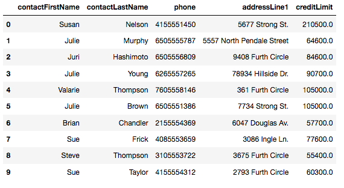
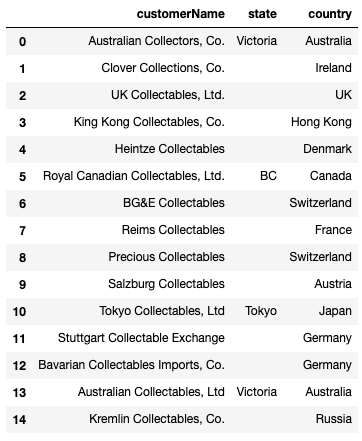
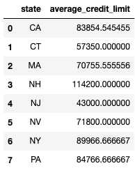
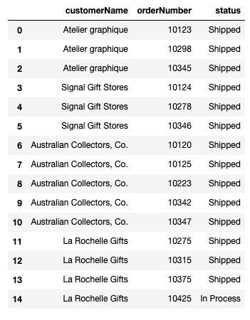
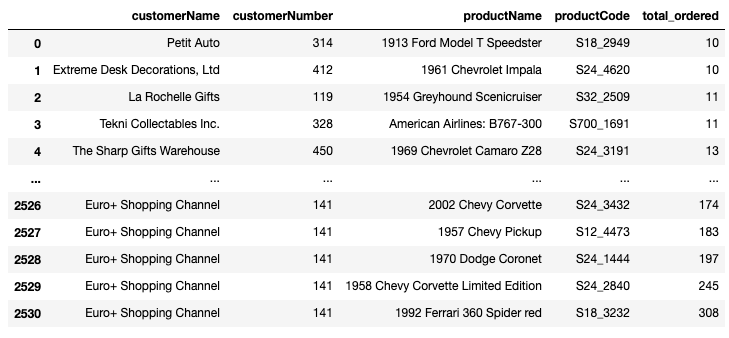

The Task
Your employer makes miniature models of products such as classic cars, motorcycles, and planes. They want you to pull several reports on different segments of their past customers, in order to better understand past sales as well as determine which customers will receive promotional material.
Here is the entity relationship diagram (ERD) of the customer database from which we’ll be working.

erd
Getting Started
We can conduct SQL queries using pandas with the sqlite3 library.
import sqlite3
import pandas
# conn establishes a connection between pandas and the sql database
conn = sqlite3.Connection("data.sqlite")The basic structure of a query in this lab is:
- Write the SQL query inside of the Python string
- Use
pd.read_sqlto display the results of the query in a formatted table
Query: Customers with Credit Over 25,000 in California
Write a query that gets the contact first name, contact last name, phone number, address line 1, and credit limit for all customers in California with a credit limit greater than 25000.00.
q1 = """
SELECT
contactFirstName,
contactLastName,
phone,
addressLine1,
creditLimit
FROM
customers
WHERE
state = 'CA'
AND creditLimit > 25000.00
;
"""
q1_result = pd.read_sql(q1, conn)
q1_resultOutput 
Query: Customers Outside of the USA with “Collect” in Their Name
Write a query that gets the customer name, state, and country, for all customers outside of the USA with "Collect" as part of their customer name.
We are looking for customers with names like "Australian Collectors, Co." or "BG&E Collectables", where country is not "USA".
q2 = """
SELECT
customerName,
state,
country
FROM
customers
WHERE
country != 'USA'
AND customerName LIKE '%Collect%'
;
"""
q2_result = pd.read_sql(q2, conn)
q2_resultOutput 
Query : Average Credit Limit by State in USA
Write a query that gets the average credit limit per state in the USA.
The two fields selected should be state and average_credit_limit, which is the average of the creditLimit field for that state.
q3 = """
SELECT
state, AVG(creditLimit) AS average_credit_limit
FROM
customers
WHERE
country = 'USA'
GROUP BY
state
;
"""
q3_result = pd.read_sql(q3, conn)
q3_resultOutput 
Query: Joining Customers and Orders
Write a query that uses JOIN statements to get the customer name, order number, and status for all orders. Refer to the ERD above to understand which tables contain these pieces of information, and the relationship between these tables.
We will only display the first 15 results.
q4 = """
SELECT
customerName,
orderNumber,
status
FROM
customers
JOIN orders
ON customers.customerNumber = orders.customerNumber
;
"""
q4_result = pd.read_sql(q4, conn)
q4_result.head(15)Output 
Query: Products that Have Been Purchased 10 or More Times
Write a query that, for each customer, finds all of the products that they have purchased 10 or more times cumulatively. For each record, return the customer name, customer number, product name, product code, and total number ordered. Sort the rows in descending order by the quantity ordered.
The five columns selected should be customerName, customerNumber, productName, productCode, and total_ordered, where total_ordered is the sum of all quantities of that product ordered by that customer.
q5 = """
SELECT
c.customerName,
c.customerNumber,
p.productName,
p.productCode,
SUM(od.quantityOrdered) AS total_ordered
FROM
customers c
JOIN orders o
ON c.customerNumber = o.customerNumber
JOIN orderdetails od
ON od.orderNumber = o.orderNumber
JOIN products p
ON p.productCode = od.productCode
GROUP BY
c.customerName, od.productCode
HAVING SUM(od.quantityOrdered) >= 10
ORDER BY
total_ordered, c.customerNumber
;
"""
q5_result = pd.read_sql(q5, conn)
q5_resultOutput 
Summary
In this code through, I provided examples of several data queries for a model car company, mainly focused around its customer data using many of the major concepts and keywords associated with SQL SELECT queries: FROM, WHERE, GROUP BY, HAVING, ORDER BY, JOIN, SUM, COUNT, and AVG.